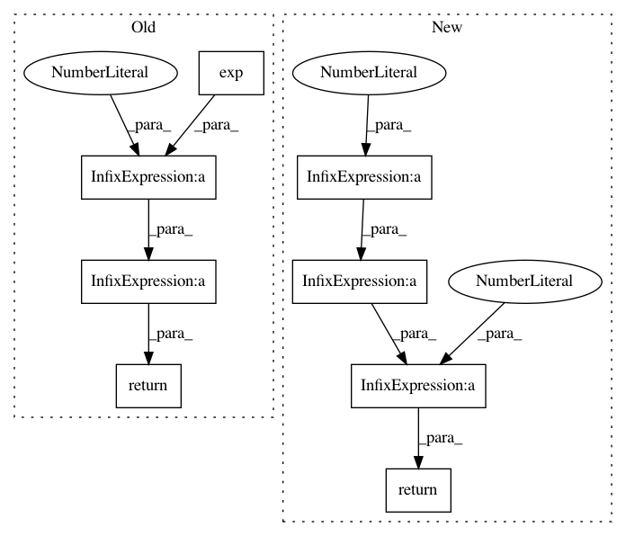

ccbe291ec9859698a57147b1033d503a7739dfa9,tensorforce/core/distributions/gaussian.py,Gaussian,kl_divergence,#Gaussian#Any#,72
Before Change
assert isinstance(other, Gaussian)
l2_dist = tf.square(self.mean - other.mean)
stddev1 = tf.exp(x=self.log_stddev)
sqr_stddev2 = tf.square(x=tf.exp(x=other.log_stddev))
return self.log_stddev - other.log_stddev + (stddev1 + l2_dist) / tf.maximum(2 * sqr_stddev2, util.epsilon) - 0.5
After Change
sq_mean_distance = tf.square(x=(self.mean - other.mean))
sq_stddev1 = tf.square(x=self.stddev)
sq_stddev2 = tf.square(x=other.stddev)
return log_stddev_ratio + 0.5 * (sq_stddev1 + sq_mean_distance) / sq_stddev2 - 0.5
In pattern: SUPERPATTERN
Frequency: 4
Non-data size: 8
Instances
Project Name: reinforceio/tensorforce
Commit Name: ccbe291ec9859698a57147b1033d503a7739dfa9
Time: 2017-08-03
Author: aok25@cl.cam.ac.uk
File Name: tensorforce/core/distributions/gaussian.py
Class Name: Gaussian
Method Name: kl_divergence
Project Name: rusty1s/pytorch_geometric
Commit Name: 45a03ac258234ba49c0a43d46ae022493190591e
Time: 2019-03-26
Author: matthias.fey@tu-dortmund.de
File Name: torch_geometric/nn/models/autoencoder.py
Class Name: VGAE
Method Name: kl_loss
Project Name: jonathf/chaospy
Commit Name: 0b10d5eaa6abb77198e8eb025fea759c4629bca6
Time: 2020-10-21
Author: jonathf@users.noreply.github.com
File Name: chaospy/distributions/collection/wald.py
Class Name: wald
Method Name: _upper
Project Name: scipy/scipy
Commit Name: c927951ccd7a3543ed9005a92ee04269b397c3a8
Time: 2015-07-27
Author: johannes@balle.io
File Name: scipy/stats/_continuous_distns.py
Class Name: chi_gen
Method Name: _pdf